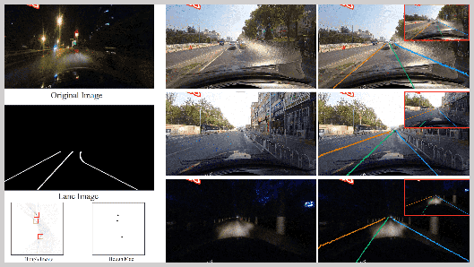
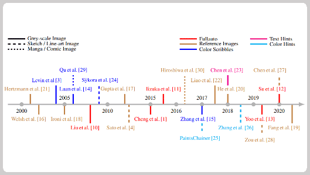

üá®üá≥
China
Zhang Jia-Qi
I am currently a Ph.D. candidate at the State Key Laboratory of Virtual Reality Technology and Systems at Beihang University, under the supervision of>> My research interests include the generation of 3D character animations, with a primary focus on the automatic generation of 3D character movements from text or speech, as well as the generation of interactions between characters and objects within virtual environments.
üî• News

The SMRNet paper is accepted to TVCG 2024!
July 2024

October 2023

The Colorization survey paper is accepted to VI 2022!
March 2022

The Line Art Video Colorization paper is accepted to TVCG 2022!
May 2022

The Write-An-Animation paper is accepted to PG 2021!
July 2021

I joined the Virtual Reality Lab at BUAA.
September 2020
The Active Colorization paper is accepted to TVCG 2020!
August 2020
üìù Publications
Skinned Motion Retargeting with Preservation of Body Part Relationships
IEEE Transactions on Visualization and Computer Graphics, TVCG 2024, CCF A
Jia-Qi Zhang, Miao Wang, Fu-Cheng Zhang, Fang-Lue Zhang
Abstract: Motion retargeting is an active research area in computer graphics and animation, allowing for the transfer of motion from one character to another, thereby creating diverse animated character data. While this technology has numerous applications in animation, games, and movies, current methods often produce unnatural or semantically inconsistent motion when applied to characters with different shapes or joint counts. This is primarily due to a lack of consideration for the geometric and spatial relationships between the body parts of the source and target characters. To tackle this challenge, we introduce a novel spatially-preserving Skinned Motion Retargeting Network (SMRNet) capable of handling motion retargeting for characters with varying shapes and skeletal structures while maintaining semantic consistency. By learning a hybrid representation of the character's skeleton and shape in a rest pose, SMRNet transfers the rotation and root joint position of the source character's motion to the target character through embedded rest pose feature alignment. Additionally, it incorporates a differentiable loss function to further preserve the spatial consistency of body parts between the source and target. Comprehensive quantitative and qualitative evaluations demonstrate the superiority of our approach over existing alternatives, particularly in preserving spatial relationships more effectively. ... See More
IEEE Transactions on Visualization and Computer Graphics, TVCG 2024, CCF A
Jia-Qi Zhang, Miao Wang, Fu-Cheng Zhang, Fang-Lue Zhang
Abstract: Motion retargeting is an active research area in computer graphics and animation, allowing for the transfer of motion from one character to another, thereby creating diverse animated character data. While this technology has numerous applications in animation, games, and movies, current methods often produce unnatural or semantically inconsistent motion when applied to characters with different shapes or joint counts. This is primarily due to a lack of consideration for the geometric and spatial relationships between the body parts of the source and target characters. To tackle this challenge, we introduce a novel spatially-preserving Skinned Motion Retargeting Network (SMRNet) capable of handling motion retargeting for characters with varying shapes and skeletal structures while maintaining semantic consistency. By learning a hybrid representation of the character's skeleton and shape in a rest pose, SMRNet transfers the rotation and root joint position of the source character's motion to the target character through embedded rest pose feature alignment. Additionally, it incorporates a differentiable loss function to further preserve the spatial consistency of body parts between the source and target. Comprehensive quantitative and qualitative evaluations demonstrate the superiority of our approach over existing alternatives, particularly in preserving spatial relationships more effectively. ... See More

HoughLaneNet: Lane Detection with Deep Hough Transform and Dynamic Convolution
Computers & Graphics, 2023, Best Paper, CCF C
Jia-Qi Zhang, Hao-Bin Duan, Jun-Long Chen, Ariel Shamir, Miao Wang
[PDF] | [CODE]
Abstract: The task of lane detection has garnered considerable attention in the field of autonomous driving due to its complexity. Lanes can present difficulties for detection, as they can be narrow, fragmented, and often obscured by heavy traffic. However, it has been observed that the lanes have a geometrical structure that resembles a straight line, leading to improved lane detection results when utilizing this characteristic. To address this challenge, we propose a hierarchical Deep Hough Transform (DHT) approach that combines all lane features in an image into the Hough parameter space. Additionally, we refine the point selection method and incorporate a Dynamic Convolution Module to effectively differentiate between lanes in the original image. Our network architecture comprises a backbone network, either a ResNet or Pyramid Vision Transformer, a Feature Pyramid Network as the neck to extract multi-scale features, and a hierarchical DHT-based feature aggregation head to accurately segment each lane. By utilizing the lane features in the Hough parameter space, the network learns dynamic convolution kernel parameters corresponding to each lane, allowing the Dynamic Convolution Module to effectively differentiate between lane features. Subsequently, the lane features are fed into the feature decoder, which predicts the final position of the lane. Our proposed network structure demonstrates improved performance in detecting heavily occluded or worn lane images, as evidenced by our extensive experimental results, which show that our method outperforms or is on par with state-of-the-art techniques. ... See More
Computers & Graphics, 2023, Best Paper, CCF C
Jia-Qi Zhang, Hao-Bin Duan, Jun-Long Chen, Ariel Shamir, Miao Wang
[PDF] | [CODE]
Abstract: The task of lane detection has garnered considerable attention in the field of autonomous driving due to its complexity. Lanes can present difficulties for detection, as they can be narrow, fragmented, and often obscured by heavy traffic. However, it has been observed that the lanes have a geometrical structure that resembles a straight line, leading to improved lane detection results when utilizing this characteristic. To address this challenge, we propose a hierarchical Deep Hough Transform (DHT) approach that combines all lane features in an image into the Hough parameter space. Additionally, we refine the point selection method and incorporate a Dynamic Convolution Module to effectively differentiate between lanes in the original image. Our network architecture comprises a backbone network, either a ResNet or Pyramid Vision Transformer, a Feature Pyramid Network as the neck to extract multi-scale features, and a hierarchical DHT-based feature aggregation head to accurately segment each lane. By utilizing the lane features in the Hough parameter space, the network learns dynamic convolution kernel parameters corresponding to each lane, allowing the Dynamic Convolution Module to effectively differentiate between lane features. Subsequently, the lane features are fed into the feature decoder, which predicts the final position of the lane. Our proposed network structure demonstrates improved performance in detecting heavily occluded or worn lane images, as evidenced by our extensive experimental results, which show that our method outperforms or is on par with state-of-the-art techniques. ... See More
Deep Line Art Video Colorization with a Few References
IEEE Transactions on Visualization and Computer Graphics, TVCG 2022, CCF A
Min Shi#, Jia-Qi Zhang#, Shu-Yu Chen, Lin Gao, Yu-Kun Lai, Fang-Lue Zhang
[PDF] | [DEMO]
Abstract: Coloring line art images based on the colors of reference images is an important stage in animation production, which is time-consuming and tedious. In this paper, we propose a deep architecture to automatically color line art videos with the same color style as the given reference images. Our framework consists of a color transform network and a temporal constraint network. The color transform network takes the target line art images as well as the line art and color images of one or more reference images as input, and generates corresponding target color images. To cope with larger differences between the target line art image and reference color images, our architecture utilizes non-local similarity matching to determine the region correspondences between the target image and the reference images, which are used to transform the local color information from the references to the target. To ensure global color style consistency, we further incorporate Adaptive Instance Normalization (AdaIN) with the transformation parameters obtained from a style embedding vector that describes the global color style of the references, extracted by an embedder. The temporal constraint network takes the reference images and the target image together in chronological order, and learns the spatiotemporal features through 3D convolution to ensure the temporal consistency of the target image and the reference image. Our model can achieve even better coloring results by fine-tuning the parameters with only a small amount of samples when dealing with an animation of a new style. To evaluate our method, we build a line art coloring dataset. Experiments show that our method achieves the best performance on line art video coloring compared to the state-of-the-art methods and other baselines. ... See More
IEEE Transactions on Visualization and Computer Graphics, TVCG 2022, CCF A
Min Shi#, Jia-Qi Zhang#, Shu-Yu Chen, Lin Gao, Yu-Kun Lai, Fang-Lue Zhang
[PDF] | [DEMO]
Abstract: Coloring line art images based on the colors of reference images is an important stage in animation production, which is time-consuming and tedious. In this paper, we propose a deep architecture to automatically color line art videos with the same color style as the given reference images. Our framework consists of a color transform network and a temporal constraint network. The color transform network takes the target line art images as well as the line art and color images of one or more reference images as input, and generates corresponding target color images. To cope with larger differences between the target line art image and reference color images, our architecture utilizes non-local similarity matching to determine the region correspondences between the target image and the reference images, which are used to transform the local color information from the references to the target. To ensure global color style consistency, we further incorporate Adaptive Instance Normalization (AdaIN) with the transformation parameters obtained from a style embedding vector that describes the global color style of the references, extracted by an embedder. The temporal constraint network takes the reference images and the target image together in chronological order, and learns the spatiotemporal features through 3D convolution to ensure the temporal consistency of the target image and the reference image. Our model can achieve even better coloring results by fine-tuning the parameters with only a small amount of samples when dealing with an animation of a new style. To evaluate our method, we build a line art coloring dataset. Experiments show that our method achieves the best performance on line art video coloring compared to the state-of-the-art methods and other baselines. ... See More
Write-An-Animation: High-level Text-based Animation Editing with Character-Scene Interaction
Pacific Conference on Computer Graphics and Applications, PG 2021, CCF B
Jia-Qi Zhang, Xiang Xu, Shen Z.M, Huang Z.H, Yang Zhao, Cao Y.P, Wan P.F, Miao Wang
[PDF] | [DEMO]
Abstract: 3D animation production for storytelling requires essential manual processes of virtual scene composition, character creation, and motion editing, etc. Although professional artists can favorably create 3D animations using software, it remains a complex and challenging task for novice users to handle and learn such tools for content creation. In this paper, we present Write-An-Animation, a 3D animation system that allows novice users to create, edit, preview, and render animations, all through text editing. Based on the input texts describing virtual scenes and human motions in natural languages, our system first parses the texts as semantic scene graphs, then retrieves 3D object models for virtual scene composition and motion clips for character animation. Character motion is synthesized with the combination of generative locomotions using neural state machine as well as template action motions retrieved from the dataset. Moreover, to make the virtual scene layout compatible with character motion, we propose an iterative scene layout and character motion optimization algorithm that jointly considers character-object collision and interaction. We demonstrate the effectiveness of our system with customized texts and public film scripts. Experimental results indicate that our system can generate satisfactory animations from texts. ... See More
Pacific Conference on Computer Graphics and Applications, PG 2021, CCF B
Jia-Qi Zhang, Xiang Xu, Shen Z.M, Huang Z.H, Yang Zhao, Cao Y.P, Wan P.F, Miao Wang
[PDF] | [DEMO]
Abstract: 3D animation production for storytelling requires essential manual processes of virtual scene composition, character creation, and motion editing, etc. Although professional artists can favorably create 3D animations using software, it remains a complex and challenging task for novice users to handle and learn such tools for content creation. In this paper, we present Write-An-Animation, a 3D animation system that allows novice users to create, edit, preview, and render animations, all through text editing. Based on the input texts describing virtual scenes and human motions in natural languages, our system first parses the texts as semantic scene graphs, then retrieves 3D object models for virtual scene composition and motion clips for character animation. Character motion is synthesized with the combination of generative locomotions using neural state machine as well as template action motions retrieved from the dataset. Moreover, to make the virtual scene layout compatible with character motion, we propose an iterative scene layout and character motion optimization algorithm that jointly considers character-object collision and interaction. We demonstrate the effectiveness of our system with customized texts and public film scripts. Experimental results indicate that our system can generate satisfactory animations from texts. ... See More
Active Colorization for Cartoon Line Drawing
IEEE Transactions on Visualization and Computer Graphics, TVCG 2020, CCF A
Shu-Yu Chen#, Jia-Qi Zhang#, Lin Gao, Yue He, Shi-Hong Xia, Min Shi, Fang-Lue Zhang
[PDF] | [DEMO]
Abstract: In the animation industry, the colorization of raw sketch images is a vitally important but very time-consuming task. This article focuses on providing a novel solution that semiautomatically colorizes a set of images using a single colorized reference image. Our method is able to provide coherent colors for regions that have similar semantics to those in the reference image. An active learning based framework is used to match local regions, followed by mixed-integer quadratic programming (MIQP) which considers the spatial contexts to further refine the matching results. We efficiently utilize user interactions to achieve high accuracy in the final colorized images. Experiments show that our method outperforms the current state-of-the-art deep learning based colorization method in terms of color coherency with the reference image. The region matching framework could potentially be applied to other applications, such as color transfer. ... See More
IEEE Transactions on Visualization and Computer Graphics, TVCG 2020, CCF A
Shu-Yu Chen#, Jia-Qi Zhang#, Lin Gao, Yue He, Shi-Hong Xia, Min Shi, Fang-Lue Zhang
[PDF] | [DEMO]
Abstract: In the animation industry, the colorization of raw sketch images is a vitally important but very time-consuming task. This article focuses on providing a novel solution that semiautomatically colorizes a set of images using a single colorized reference image. Our method is able to provide coherent colors for regions that have similar semantics to those in the reference image. An active learning based framework is used to match local regions, followed by mixed-integer quadratic programming (MIQP) which considers the spatial contexts to further refine the matching results. We efficiently utilize user interactions to achieve high accuracy in the final colorized images. Experiments show that our method outperforms the current state-of-the-art deep learning based colorization method in terms of color coherency with the reference image. The region matching framework could potentially be applied to other applications, such as color transfer. ... See More

A review of image and video colorization: From analogies to deep learning
Visual Informatics, VI 2022
Shu-Yu Chen, Jia-Qi Zhang, You-You Zhao, Paul L. Rosin, Yu-Kun Lai, Lin Gao
[PDF]
Abstract: Image colorization is a classic and important topic in computer graphics, where the aim is to add color to a monochromatic input image to produce a colorful result. In this survey, we present the history of colorization research in chronological order and summarize popular algorithms in this field. Early work on colorization mostly focused on developing techniques to improve the colorization quality. In the last few years, researchers have considered more possibilities such as combining colorization with NLP (natural language processing) and focused more on industrial applications. To better control the color, various types of color control are designed, such as providing reference images or color-scribbles. We have created a taxonomy of the colorization methods according to the input type, divided into grayscale, sketch-based and hybrid. The pros and cons are discussed for each algorithm, and they are compared according to their main characteristics. Finally, we discuss how deep learning, and in particular Generative Adversarial Networks (GANs), has changed this field. ... See More
Visual Informatics, VI 2022
Shu-Yu Chen, Jia-Qi Zhang, You-You Zhao, Paul L. Rosin, Yu-Kun Lai, Lin Gao
[PDF]
Abstract: Image colorization is a classic and important topic in computer graphics, where the aim is to add color to a monochromatic input image to produce a colorful result. In this survey, we present the history of colorization research in chronological order and summarize popular algorithms in this field. Early work on colorization mostly focused on developing techniques to improve the colorization quality. In the last few years, researchers have considered more possibilities such as combining colorization with NLP (natural language processing) and focused more on industrial applications. To better control the color, various types of color control are designed, such as providing reference images or color-scribbles. We have created a taxonomy of the colorization methods according to the input type, divided into grayscale, sketch-based and hybrid. The pros and cons are discussed for each algorithm, and they are compared according to their main characteristics. Finally, we discuss how deep learning, and in particular Generative Adversarial Networks (GANs), has changed this field. ... See More
üíª Outreach activities

Subway:
Target Identification in Multi-View Videos and Virtual Avatar Generation
CRRC INSTITUTE 2022 (Beijing, China.)
Jia-Qi Zhang, Yi-Jun Li.
Description: This project presents a framework for virtual reality applications, including content generation, character positioning, navigation, interaction methods, and demonstrations, offering insights for specific domains.
Prize: Received a certification of practical application.
CRRC INSTITUTE 2022 (Beijing, China.)
Jia-Qi Zhang, Yi-Jun Li.
Description: This project presents a framework for virtual reality applications, including content generation, character positioning, navigation, interaction methods, and demonstrations, offering insights for specific domains.
Prize: Received a certification of practical application.
üì∏ Gallery

won the grand prize in 3DV (2023)

photo with my mentor and junior (2023)

won the Best Paper Award for the first time (2023)
‎